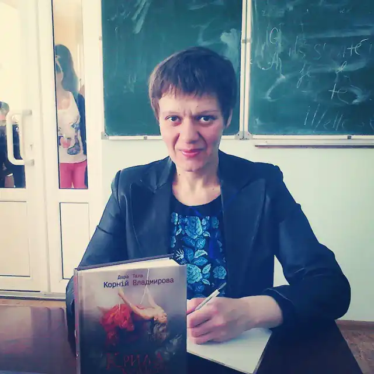
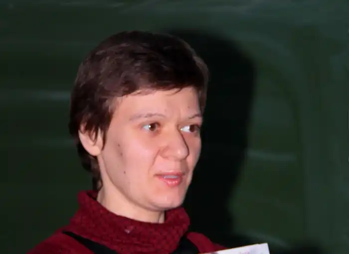

Справжнє ім'я Таміла Тарасенко
Народилася в Гуляйполі, дитячі роки провела в Чернігові, зараз мешкаю в Запоріжжі. Закінчила фізико-математичну школу, вищу освіту здобула за філологічним профілем.
У співавторстві з львівською письменницею Дарою Корній видала два романи: "Зозулята зими" і "Крила кольору хмар". Оповідання увійшли до збірок "Львів. Спогади. Кохання", "Львів. Шоколад. Кам'яниці", "Їде маршрутка", "Кишеньковий мандруарій". (Псевдонім Тала Владмирова). Оповідання і повісті публікувалися в часописах й альманахах "Нова проза", "Дніпро", "Київська Русь", "Дзеркало", "Четвер", "УФО (Український фантастичний оглядач"), "Хортиця", "Ірпінські зорі" тощо. Мої дитячі казки й оповідання для дітей неодноразово виходили друком в журналах "Вечірня казка" і "Хортиця". У 2020 році перемогла в конкурсі "Дитяча КороНація" в номінації "Дорослі для дітей" (дошкільнята) збірка оповідань "Пригоди Ольки та Горки".